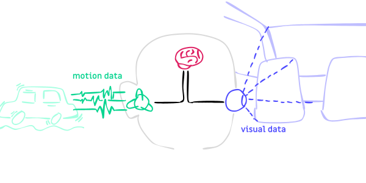
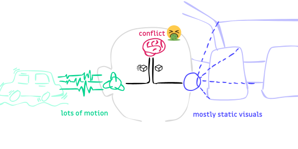
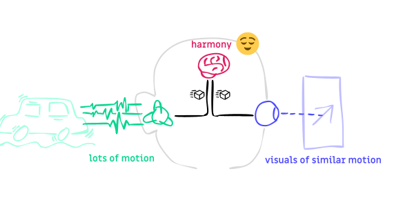
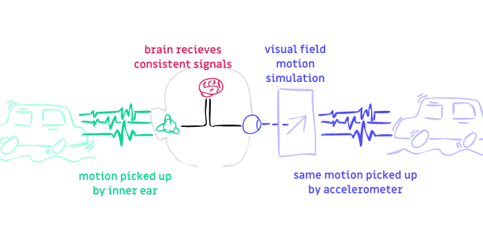
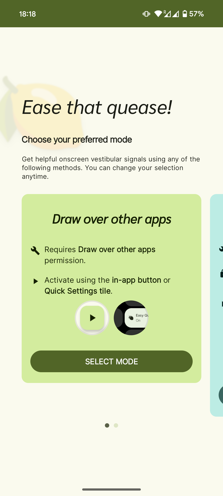
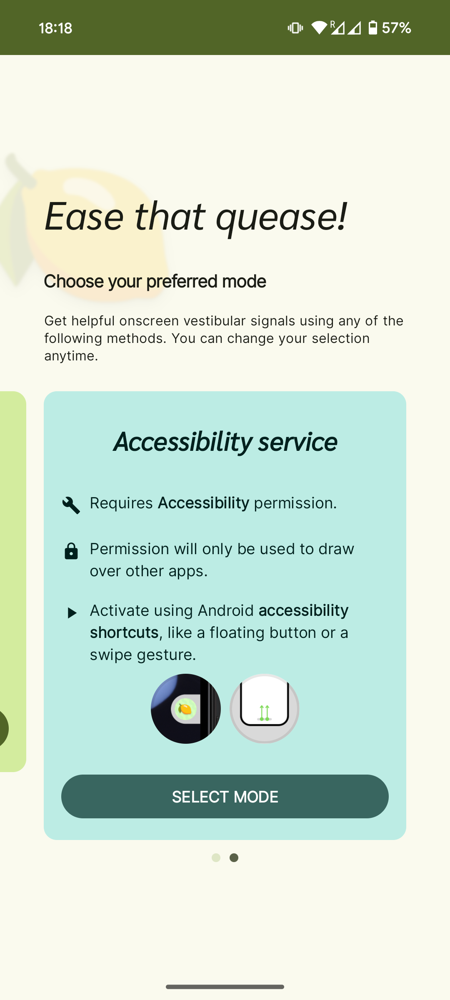
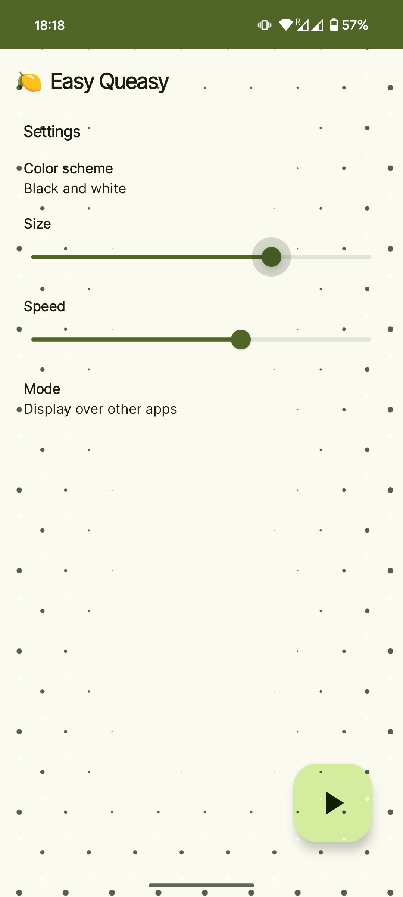
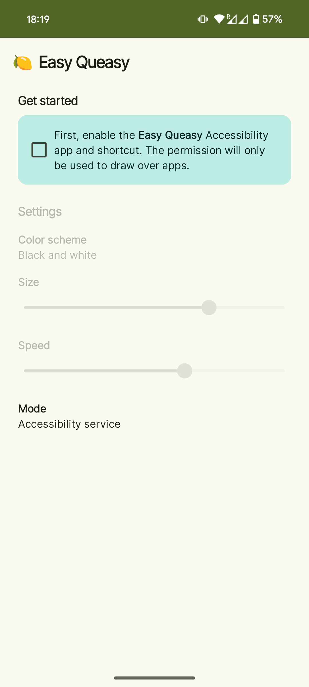
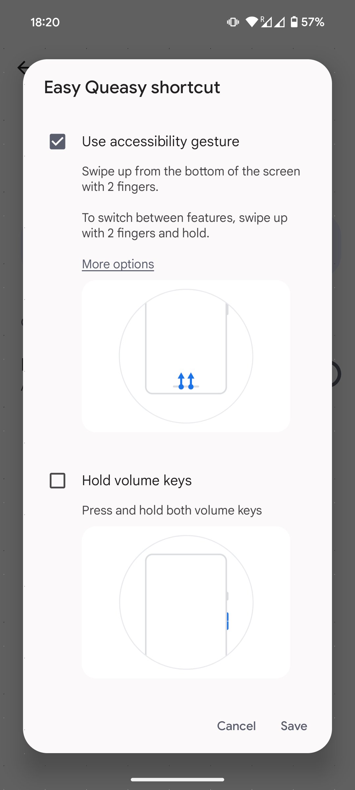

Last May, Apple announced a new feature called Vehicle Motion Cues for their iOS devices. It’s an overlay that can help reduce motion sickness while riding a vehicle.
I have really bad motion sickness, and riding cars, buses, and trains makes me nauseous. This feature would have been a nice relief for me, but as it stands, I use Android.
Instead of buying a Malus fruit device, I took the matter into my own programmer hands. I created an alternative app for Android.
To be sure, I checked the patents. Apple does have one regarding a certain motion sickness solution, but it’s specifically for head-mounted displays, not handheld devices. I figured it’s because there is prior art for handheld devices, such as KineStop for Android by Urbandroid.
My app is called EasyQueasy. What it does is display onscreen vestibular signals that try to help prevent motion sickness. This functions as an overlay that is displayed on top of whatever you’re doing, browsing the web or watching videos.
The app is open source. I might try to get it on F-Droid someday. Probably not Google Play since Google suspended my developer account due to “inactivity”.
I made this for myself so I haven’t really sorted out distribution. GitHub repo is here anyway.
Side note: Apologies to the RSS readers of this blog and segfault. I accidentally published this post in the RSS feed, but not on the site, which lead to an incomplete draft post and a 404 error.
How does it work?
There are two facets to this inquiry:
- How does it help with motion sickness?
- How does the app work behind the scenes?
Let’s go over them sequentially.
How to unsick motion
Motion sickness happens when your brain receives conflicting motion cues from your senses. Motion cues come from the vestibular system (“sense of balance”, inner ears) and the visual system (eyes).

The system diagram
When you’re in a moving car, your eyes mostly see the stationary interiors of the car but your inner ears feel the movement. The signal of being stationary and the signal of being in motion does not make sense in the central processing system somewhere in the brain (which decides that the solution to this particular situation is to vomit).

There’s a bug in the central processing module that triggers an unexpected response to conflicting signals.
Side note: The inverse happens in virtual reality when you move or rotate your character—your eyes recognise motion but your inner ears (your physical body) feel no motion, causing sickness. As I mentioned, I have really bad motion sickness, and both car movement and VR movement are almost unbearable to me.
To reduce motion sickness, we need to match the visual input with the vestibular input. Unfortunately, there’s no hardware that can override the inner ears’ sense of motion just yet. But we can semi-hijack the visual system via age-old hardware called screens.
By displaying movement on-screen that matches the actual movement of the body, motion sickness can be thus reduced!

The workaround is to hijack one of the sources to produce a ‘correct’ signal. In this case, we add an override to the visual input.
Behind the screens
Almost every smartphone has an accelerometer in them. It’s a hardware module that measures acceleration in real time.
Coincidentally, the inner ears also sense the same particular aspect of motion, acceleration. That’s why it can detect up or down (the planet’s gravity is an ever-present acceleration towards “down”), functioning as a “sense of balance”, and detect relative motion at the same time.
So, smartphones have “inner ear” hardware. By reading off of this sensor, we can generate the correct visuals.

The visual layer is just an adapter to same acceleration data used by the other source. By converting motion data to visual data, we can be sure that the signals match! This is the final solution.
The other Android app, KineStop, appear to use the phone’s magnetic sensor (compass) in addition to the accelerometer. So, it also knows about your absolute orientation in the world. It’s more effective in turning motions, but not so much for bumpy rides.
There are definitely multiple ways to solve the problem, but I find that the purely acceleration-based solution is sufficient for me.
Dead reckoning
The accelerometer provides acceleration data, but what we actually need to draw dots on the screen is position.
Recall in calculus or physics that the integral of acceleration is the velocity and the integral of velocity is position. There are two layers of integration before we can draw dots on the screen.
acceleration → velocity → position
What the app does is numerical integration. It keeps track of an estimated velocity and an estimated position in memory. Then, on every tick, it adds the current acceleration vector to the velocity vector, and add the velocity to the position. Note: all vectors here are in 3D.
The calculated position vector provides an estimate of the phone’s current position! Finally, we can draw dots!
To provide the correct sensation of movement, the dots must appear stable relative to the origin, that is, the earth. Negating the calculated position vector achieves this effect.
// pseudocode
onEveryFrame() {
velocity += accelerometer.getAcceleration()
position += velocity
drawDots(offset = -position)
}
Error correction
The accelerometer signal is very noisy. While that is workable for many applications, when we’re doing position integration the errors really add up, and simple dead reckoning is way off.
Standard signal processing techniques can be applied to deal with noise, like a low-pass filter.
// Example: With a low-pass filter
onEveryFrame() {
// low-pass filter
smoothAcceleration +=
(accelerometer.getAcceleration() - smoothAcceleration) * 0.60
// position integration
velocity += smoothAcceleration
position += velocity
drawDots(offset = -position)
}
But a simpler solution like dampening the velocity over time is plenty sufficient.
// Example: With velocity dampening
onEveryFrame() {
// position integration
velocity += accelerometer.getAcceleration()
position += velocity
// dampen
velocity *= 0.80
drawDots(offset = -position)
}
And that is basically how EasyQueasy works. And presumably iOS does it similarly as well.
EasyQueasy features
EasyQueasy’s features and advantages over the current iOS solution are:
- Configurable speed and other parameters.
- It’s 3D! Because movement in the real-world is three-dimensional!
- Option to activate the overlay from any screen via quick gesture shortcuts.
Gallery




